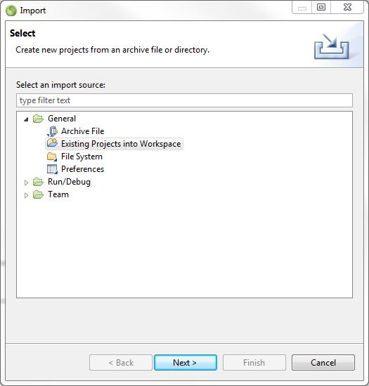
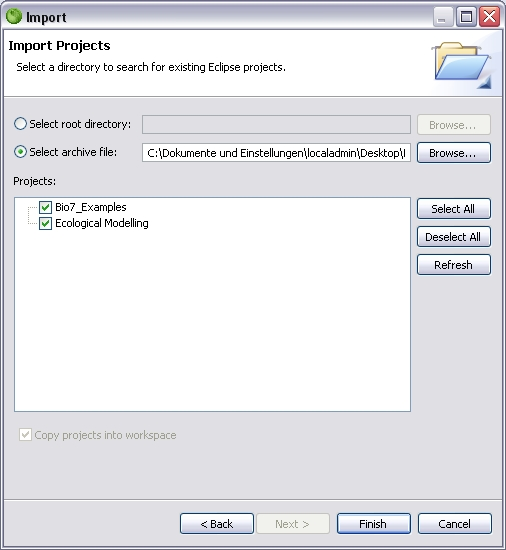

To install the Bio7 examples please
import the examples from the Examples.zip file.
File->Import->Existing
Projects into Workspace

Select the archive file Examples.zip and the two projects Bio7_Java_Examples and Bio7_Script_Examples. Press Finish to import them into Bio7 (they will imported to the workspace location).

For the Flow editor: Older Windows
versions require the gdi+ library which has to be
downloaded from Microsoft and
installed (e.g copied in the ..Windows/System32 folder)
Candidates are: Windows NT, Windows
2000, Windows 98, Windows ME.
This is not necessary if the Flow editor is
working by default.